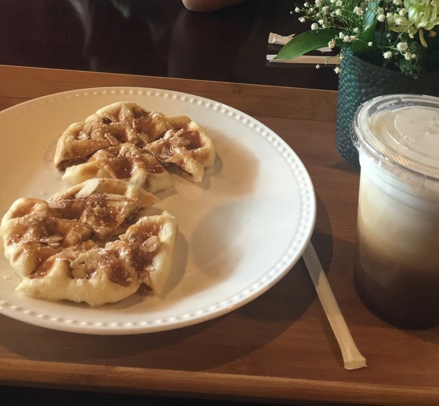

Summer 2018 Goals
May 21st, 2018

This summer, I will be staying in St. Louis, participating in the Less Annoying CRM Coding Fellowship program.
Over the next two months, we'll be learning the basics of building a website and hopefully get to build our own.
As I work here at LACRM, I hope to accomplish some other goals outside of just work and premed, learning to
destress and have some fun exploring this summer!!
Read More
May Eats
May 22nd, 2018

It's been forever my goal to try to eat healthy CONSISTENTLY because CONSISTENCY is KEY. However, I haven't had much luck.
With finals hitting beginning of May along with my six day break back at home, I've definitely managed to put on some weight after
eating so much. As I'm finally getting into the routine of things here in St. Louis, I've been making an effort to cook not only to save
money but also to eat healthier! It's been a tough process trying to basically quit my sugar addiction, but here are some of the foods I got
a taste of during the month of May!!
Read More